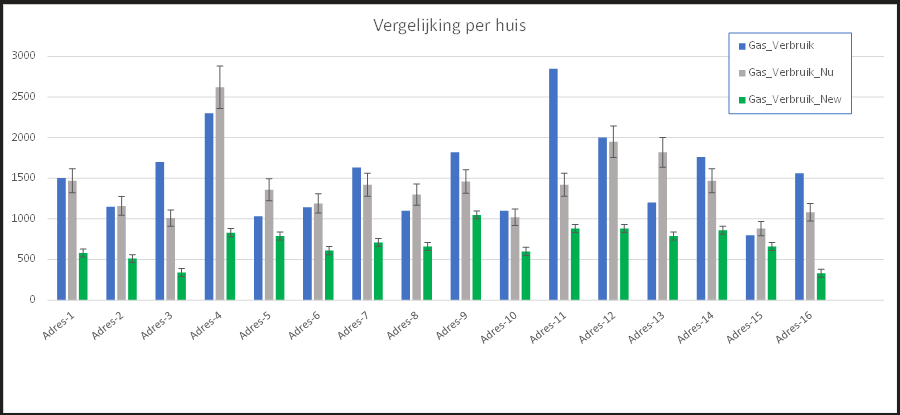

Op 11 mei 2023 hebben we voor een aantal woningen het gasverbruik berekend met het model Inzicht_Warmtelek.
Voor die woningen waarbij ook het werkelijk gasverbruik is genoteerd hebben opgegeven, hebben we een vergelijking gemaakt tussen het werkelijk gasverbruik en het gasverbruik berekend door het model. Klinkt als een hoop werk, maar dat laten we grotendeels uitvoeren door een computerprogramma.
Naast de woningen die op de avond van 11 mei zijn berekend, heb ik ook een paar woningen meegenomen die ik zelf tijdens energiecoach gesprekken heb genoteerd.
Omdat de eerste vraag is, hoe goed werkt het model als je alleen de basisvragen beantwoord, heb ik de berekeningen waar te veel detail was ingevuld weggelaten. Detaillering van glas is wel geaccepteerd, omdat nooit een eis in het bouwbesluit is geweest en er derhalve grote verschillen tussen woningen uit eenzelfde vouwjaar kunnen bestaan. In dat kader was Burchstraat 25 met veel te veel detail ingevuld, maar is hier opgevoerd met enkel de basisvragen.
Hieronder ziet u het resultaat van iedere individuele woning.
Legenda
- Blauw is het werkelijk gasverbruik
- Grijs is het gasverbruik berekend door het model voor de huidige situatie
- Groen is het gasverbruik berekend door het model als alle bespaarmogelijkheden zijn benut
De errorbar (daar is Excel helaas heel slecht in) in grijze en groene balk, is een ruwe schatting van de effecten van een graadje lager of hoger.
Het type woning in deze grafiek:
- 1 tussenwoning
- 8 hoekwoningen (of 2/1 kap)
- 7 vrijstaande woningen

De grote verschillen:
- Adres-3, Bewoners stoken nagenoeg alleen hout, Of ze hebben de kuubs verkeerd ingeschat of ze gebruiken heel slecht hout. M.a.w. deze mag je eigenlijk niet meenemen in de vergelijking.
- Adres-11. Bewoners hebben een serre die als extra isolatieschil dient, stoken een onbekende hoeveelheid hout en hebben een warmtepomp. Ook deze dus niet mee tellen in de vergelijking.
- Adres-13. Het huis van de buren is nagenoeg identiek en vertoont precies het omgekeerde. Mogelijk dat er een onbekende gasverbinding tussen beide huizen zit ;-)
Als we zien wat we daarna overhouden, kunnen we voorzichtig concluderen:
- Het is duidelijk bij welk type woning onze grootste aanhang te vinden is
- De overeenkomst tussen werkelijk en berekend gasverbruik is behoorlijk goed
- Het lijkt erop dat het berekend gasverbruik gemiddeld iets lager is dan het werkelijk gasverbruik
- We hebben nog onvoldoende woningen om met de resultaten het model bij te sturen